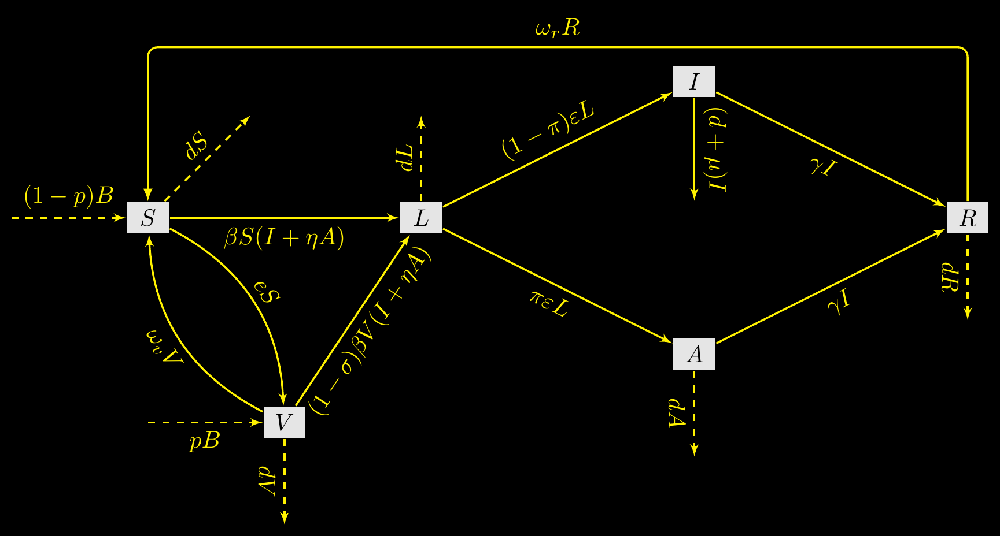

R for modellers - Vignette 23
Sensitivity analysis in R
Julien Arino


Department of Mathematics
University of Manitoba*
We saw an example of sensitivity analysis in Vignette 07
Here we cover the topic in more detail
Warning: sensitivity analysis is a vast topic, we don’t go into details here. Also, as always in these vignettes, this is about using R to perform sensitivity analysis, not about the theory itself…
What is sensitivity analysis
Uncertainty vs sensitivity analysis
According to Wikipedia (emphasis mine)
- Uncertainty analysis investigates the uncertainty of variables that are used in decision-making problems in which observations and models represent the knowledge base
- Sensitivity analysis is the study of how the uncertainty in the output of a mathematical model or system (numerical or otherwise) can be divided and allocated to different sources of uncertainty in its inputs
For modellers
Some notation
\(P\) number of parameters considered
Parameter space \(\mathbb{P}\): some subset of \(\mathbb{R}^P\)
\(p\in\mathbb{P}\) a point in parameter space
- Output in direct functional form
\(y=f(p)\), \(f:\mathbb{P}\to\mathbb{R}\) some function and \(p\in\mathbb{P}\)
- Output in observational functional form
\[\begin{align*} x' &= g(x,p),\quad x\in\mathbb{R}^n,p\in\mathbb{P} \\ y &= h(x) \end{align*}\] where \(g:\mathbb{R}^n\times\mathbb{P}\to\mathbb{R}^n\) and \(h:\mathbb{R}^n\to\mathbb{R}\)
\(h\) may be some complicated function
A running example - SLIARSV with demography
- Bistability in deterministic and stochastic SLIAR-type models with imperfect and waning vaccine protection, Arino & Milliken, Journal of Mathematical Biology, 2022
- Complex model with enough parameters (13) for illustration, but for which some quantities (\(\mathcal{R}_0\), \(\mathcal{R}_v\), …) are known
A running example - SLIARSV with demography
Parameters
| Type | Parameter | Description |
|---|---|---|
| Demography | \(B\) | Natural birth rate (\(=dN_0\)) |
| \(d\) | Natural mortality rate | |
| Disease characteristics | \(\beta\) | Rate of transmission |
| \(\eta\) | Modification of transmission for asymptomatics | |
| \(\pi\) | Proportion of asymptomatic cases | |
| \(\varepsilon\) | Rate of transition from latency to infectious stage | |
| \(\gamma\) | Rate of recovery | |
| \(\omega_r\) | Rate of waning of disease induced immunity | |
| \(\mu\) | Disease induced mortality rate | |
| Vaccination | \(p\) | Proportion of newborns vaccinated |
| \(e\) | Rate of vaccination of adults | |
| \(\sigma\) | Vaccine efficacy | |
| \(\omega_v\) | Rate of waning of vaccine induced immunity |
The system
\[ \begin{align} S' & = (1-p)B + \omega_vV + \omega_rR - \beta S (I+\eta A) - (e + d) S \\ V' & = pB + e S - (1-\sigma )\beta V (I+\eta A) - (\omega_v + d) V \\ L' & = \beta (S+(1-\sigma)V) (I+\eta A) - (\varepsilon + d) L \\ I' & = (1 - \pi)\varepsilon L - (\gamma+ \mu + d) I \\ A' & = \pi\varepsilon L - (\gamma+ d) A \\ R' & = \gamma (A + I) - (\omega_r + d) R \end{align} \tag{1}\]
Disease-free equilibria (DFE)
In (1) without equation for \(V'\) and with \(p=e=\omega_v=0\), DFE has \(\bar S_0=B/d\)
DFE of full (1) is \(E_0 = (S_0,V_0,0,0,0,0)\), where \[ S_0 = \frac{(1-p)d+\omega_v}{e+\omega_v+d}\; \frac Bd \quad\textrm{and}\quad V_0 = \frac{pd+e}{e+\omega_v+d}\;\frac Bd \tag{2}\]
Reproduction numbers
With the combination parameter \[ \lambda = \beta\varepsilon \frac{(\gamma+\mu+d)\eta\pi + (1-\pi)(\gamma + d)} {(\gamma + d)(\gamma+\mu+d)} \tag{3}\]
we have
\[ \mathcal{R}_0 = \frac{\lambda}{\varepsilon+d}\bar S_0 \tag{4}\] \[ \mathcal{R}_v=\frac{\lambda}{\varepsilon+d}(S_0+(1-\sigma)V_0) \tag{5}\]
Two main cases for modellers
- Direct approach: you have a function (EP as function of parameters, \(\mathcal{R}_0\) in an epi model, etc.) and want to test its dependence on parameters. You can evaluate the function at each point in parameter space
- Indirect approach: you have a model and want to test the dependence of a model output on parameters. You must first do a model run at each point in parameter space, then compute the model output
Different methods
Different methods
- OAT (one factor at a time)
- Local sensitivity
- Global sensitivity
- Sensitivity for (dynamic) ODE
- Heatmaps
One factor at a time
- Evaluate response of system to changes in 1 parameter, ceteris paribus
- Assumes you have good confidence in your parameters, as you are testing variations with other parameters set at baseline value
Local sensitivty analysis
Take partials of output with respect to individual parameters \[\begin{equation} \frac{\partial y}{\partial p_i} \end{equation}\] where \(i=1,\ldots,P\) is one of the parameters
Global sensitivity analysis
Global before OAT
- Often worth doing global before OAT: parameters with little influence on the output can be fixed without much debate
Sensitivity for (dynamic) ODE
Heatmaps
- Deterministic version of OAT with one or (usually) two parameters
- Set all other parameters to baseline and vary deterministically 1 or 2 parameters
Importance of parameter sampling methods
- For all methods except heatmaps, important to think about choice of points in parameter space being investigated (sampling of parameter space)